git
a little tale

intro to VCS
Version Control Systems (VCS)
- wise programmers use a VCS in code development
- tracks and provides control over changes of data
- more importantly helps collaboration!
- storing versions of code
- restoring code to a previous version
- comparing changes over time
- understanding what happened
- see who to blame for a bug
- supports the consistency & integrity of data
- provides a backup of your work
history
Before-VCS epoch
- Lower paleolithic: Keep your own versions
- Stone-age: Use diff, emails and tars
Centralized VCS (CVCS) epoch
- Bronze age: CVS, a wrong intro
- Iron age: SVN, perforce
Distributed VCS (DVCS) epoch
- Modern era: bazaar, arch, monotone, darcs, bitkeeper
Linus and the war of (D)VCS
- Linus was not happy with any of the OS solutions!
- He stepped out of Linux development for a month to create his second child, git
- mercurial, another child of the war
- git wins the war, becomes the standard in OS community, followed by mercurial
DVCS vs CVCS
Centralized 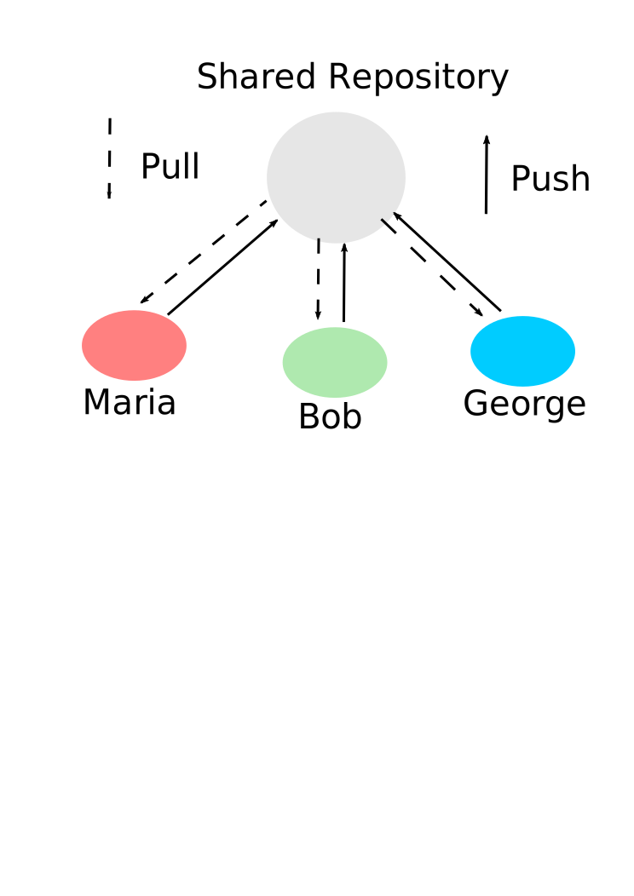
- Only a single copy of the repository (unsafe)
- Server communication for each operation (slow, needs net)
- Server is offline or corrupted; no work done (offline cost)
- Everything is stored to the server; even failed things (redundacy)
- Pros: Rather simple interaction (simple but not flexible)
Distributed 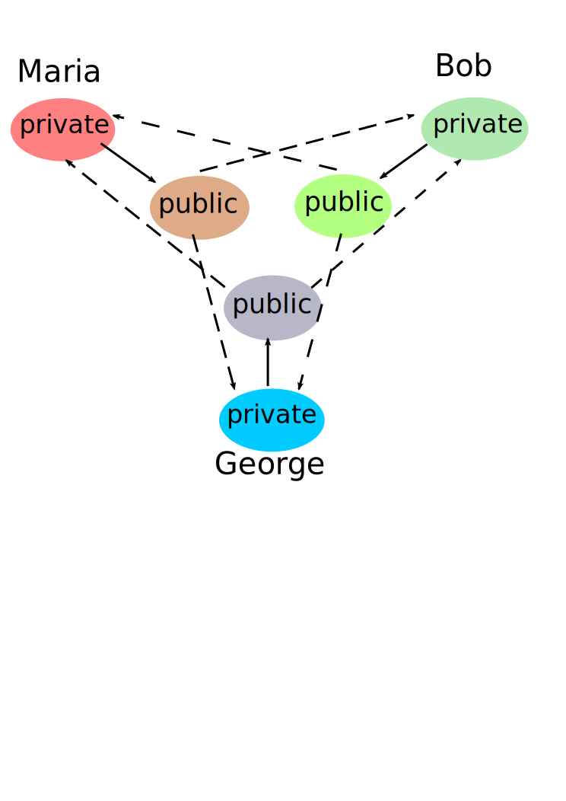
- More powerful and flexible workflows (promote collaboration)
- Each user has its own repository (safety)
- Operations are done locally (performance)
- Branches is the way to go (easy to create, delete and merge)
- Cons: Initial checkout is more costly (download the whole history)
- Cons: A little more difficult to grasp UI (interaction overhead)
git ≈ hg
| SVN | Mercurial (hg) | git | |
|---|---|---|---|
| Type | CVCS | DVCS | DVCS |
| Storage method | Changeset/Snapshot | Changeset | Snapshot |
| Learning Curve | Easy | Moderate | Steep |
| Developed in | C | Python | C/perl/shell scripts |
| Speed | Slow | Fast | Very Fast |
| Branching | Easy | Free | Free |
| Merging | Difficult | Pretty easy | Piece of cake |
| Data Integrity | Primitive | SHA-1 | SHA-1 |
| Space Requirements | Big | Small (efficient for small projects) | Small (efficient for big projects) |
| History rewriting | No | Yes | Yes |
| VCS Collaboration | No | Yes | Yes |
| Integration with IDEs | Yes | Yes | Yes |
Trends
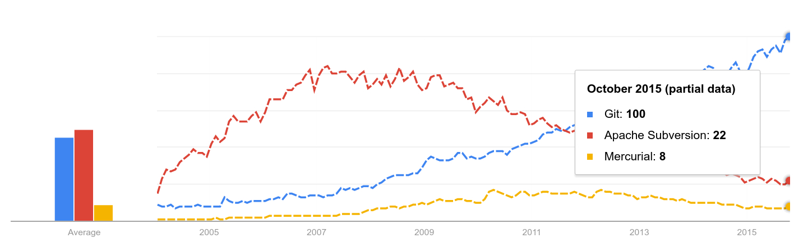git has better marketing
hi, I am git
Who are you?
- So, you installed git!
- Git has to know some things about you, like your name, email, settings...
$ git config --global user.name "John Doe"$ git config --global user.email johndoe@example.com- To check what git knows about us and other settings
$ git config --list
user.name=John Doe
user.email=johndoe@example.com
color.status=auto
color.branch=auto
color.interactive=auto
color.diff=auto
...
your first repo
git init 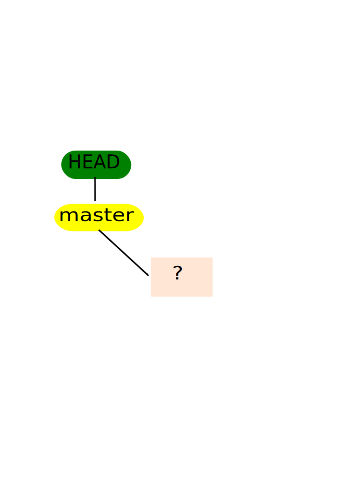
- You can initialize a repo with
git init $ git init tutorial
- A new directory
tutorialis created - Inside
tutorial,.gitdirectory holds all repository information
git status
- At any time you can check your status with
git status - Rather informative command, but not after init!
$ git status
On branch master
Initial commit
nothing to commit (create/copy files and use "git add" to track)
3 trees +
three trees
working directory→ sandbox, holds the filesindex→ snapshot of changes proposed for next revisionHEAD→ pointer to last snapshotinitalso createsmasterdefault & active branch
detached mode → no active branchHEAD(usually) points where the branch points
create our first file 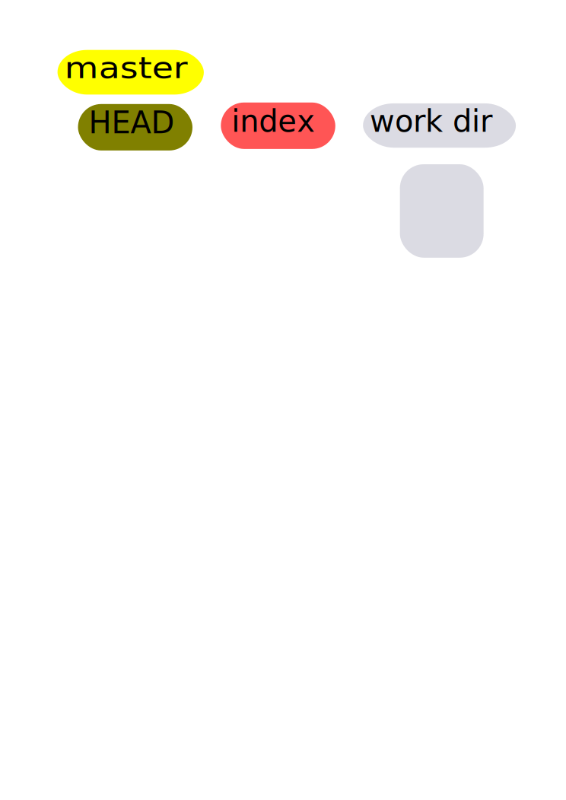
$ touch first- File is added to
working directory
git add [<file>]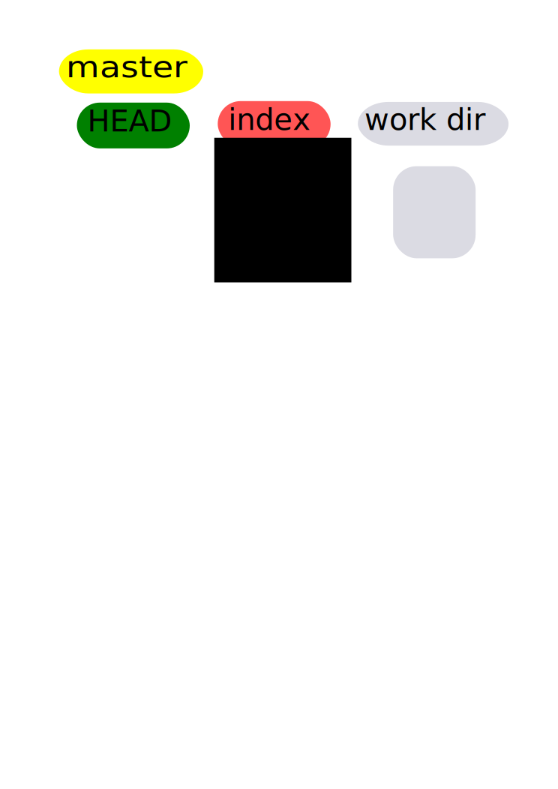
- Add content to the staging index
$ git add first
- File added to
index
logcommit(revision)
git commit [<file>]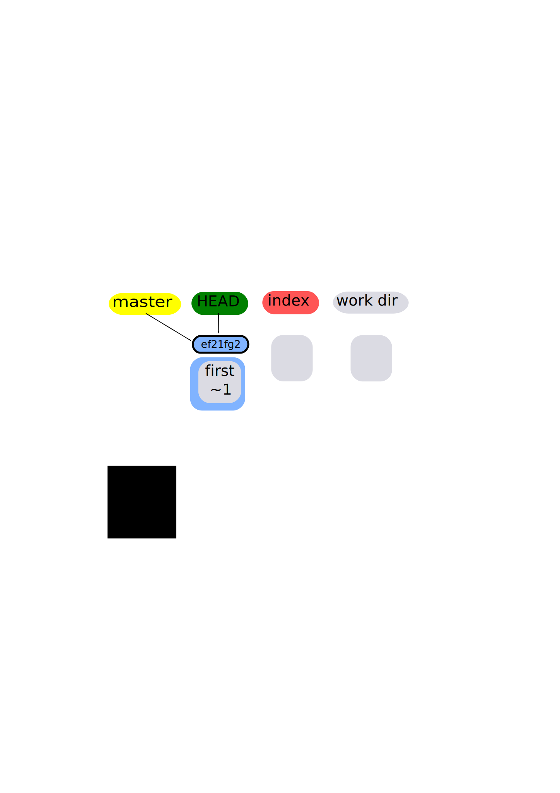 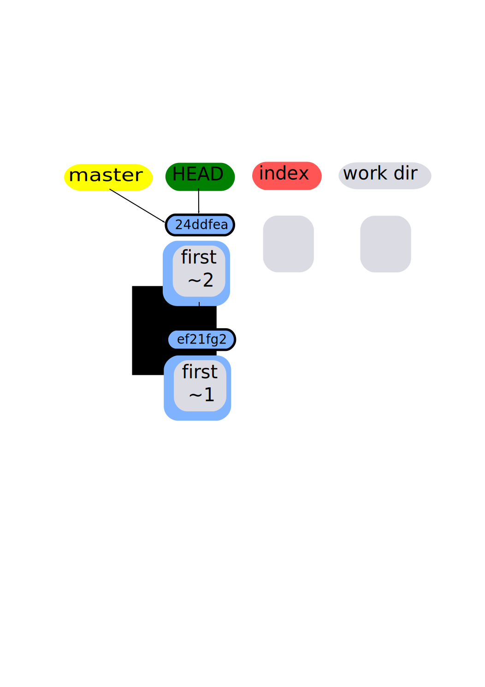
- Stores the contents of the index in a new commit object
- along with who, when, and why made those changes
- parent of commit object is the previous commit
- Creates a SHA-1 20 byte hash using the above
HEADandmasterpoint to new commit$ git commit first- Add & commit the file at the same time
$ git commit -a first
git log
$ git log --decorate --graph
* commit 8484f4fccb80e625b7c05cdc214014a32d176777 (HEAD)
| Author: Panagiotis Papadakos <papadako@gmail.com>
| Date: Tue Oct 20 01:15:40 2015 +0300
| Add some content
Grow branches
git branch <name> 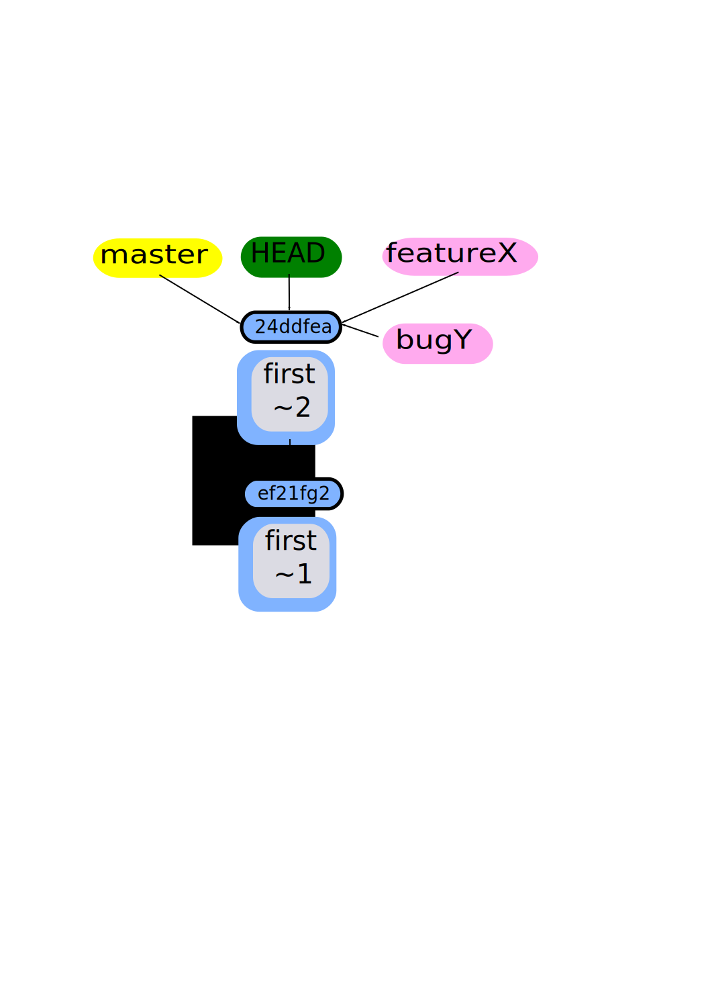
- Branching is a very cheap and widely used operation
- Develop features/correct bugs/experiment in isolation
- ... and delete them without affecting the main history
- Just creates a new pointer where
HEADpoints $ git branch featureX && git branch bugY
- Only one activeBranch (the rest notActiveBranches)
masteris the default branch (commitstill updates themasterpointer)
git checkout [<name>] 
- Switch to another branch
- Updates files in the working tree to match the version
in the index or the specified tree <name>a branch name or commit object (if not given,HEAD)- If modifications cannot be applied cleanly
...gitwon't switch to another branch (usegit commit/git stash) $ git checkout featureX
merge-α
git merge <commit> 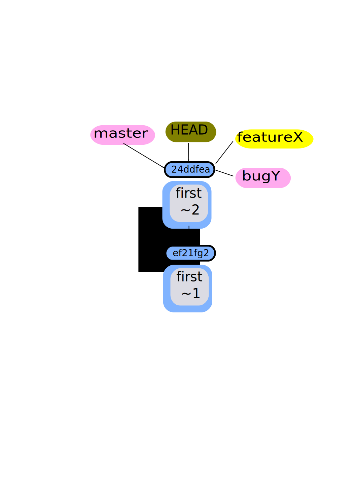
- Easy branching without easy merging has no value!
- Join two or more development histories (branches) together
- Example: Made a number of commits in branch
featureX - Incorporate them in
masterby:
git checkout master
git merge featureX - The simplest of all merges: fast forward !
merge-β
git merge <commit> 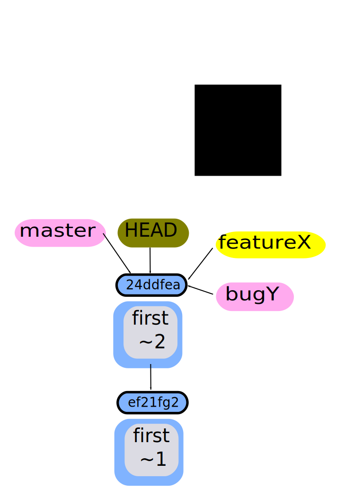
- A more difficult case!
- Make a number of commits to
featureX - Then go to
master - Make a number of commits
- Merge
masterwithfeatureX - If branches haven't modified the same lines,
githas no problem! - A commit object can have many parents
- Even if we can fast forward
git merge -no-ffwill create a new commit
conflicts-γ
Merging can lead to conflicts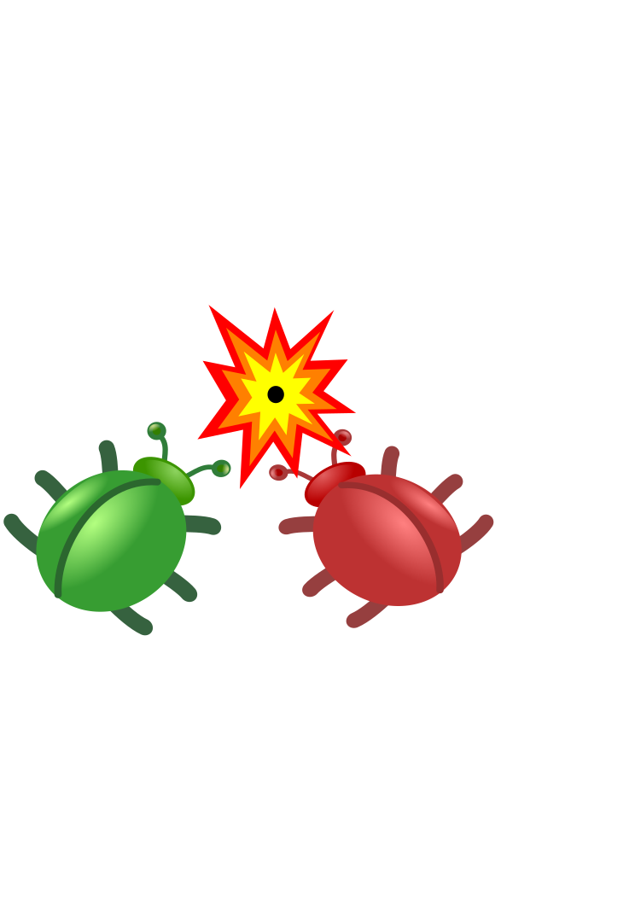
gittries hard and is smart enough in avoiding them- But when conflicts occur, no need to be scared!
- Let them fight and choose the winner
i.e. review the code and resolve them (removing >>>===<<<) git addresolved files and then commit
<<<<<<< HEAD
I am the bug!
=======
No, I am the bug!
>>>>>>> master
Resolve bug
On-line repos!
git remote 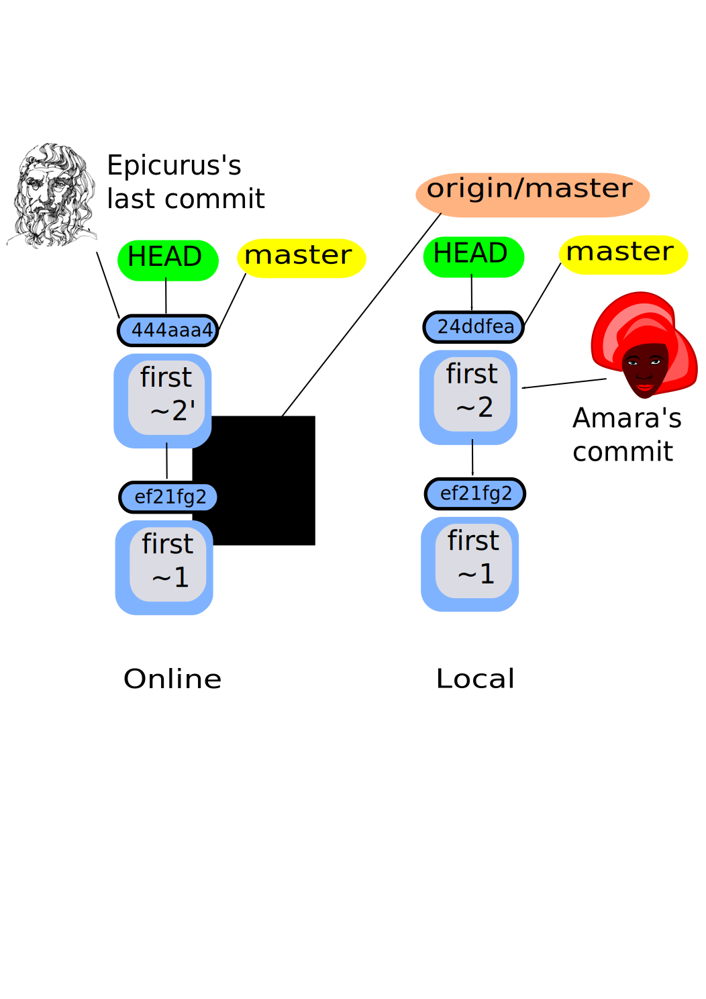
- The whole thing is about collaboration!
gitdoes not have a central repository likeSVN- Repositories have to be uploaded for sharing
- All repositories are equal
- Isolated environment - manual synchronization
- Supported protocols - http, https, git, filesystem
- Creates pointers like
branch, pointing to other repo's commit objects git remote- Create connections & give nick names to online repos$ git remote add forU https://github.com/papadako/git-a-little-tale.git- Remote pointers are updated when we have network traffic
clone repos, !
git clone [<repoName>]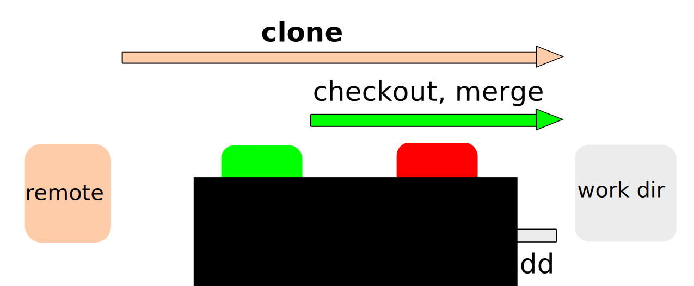
- Clones a repo locally, into a newly created directory
- Creates remote branches for each branch in the cloned repo
- Default nick name of remote is
origin(likemasterforinit) - Checkout an initial branch (cloned repo’s currently active branch)
$ git clone https://github.com/papadako/git-a-little-tale.git
, fetch it!
git fetch [<remote>]
- Brings commits from online repo to local
- Does not merge the changes though
- Integration of changes: a two step process
$git fetch origin(fetches all online branches of remoteorigin)$git fetch origin bname(fetches onlyorigin/bname)
Now, pull!
git pull [<remote>] 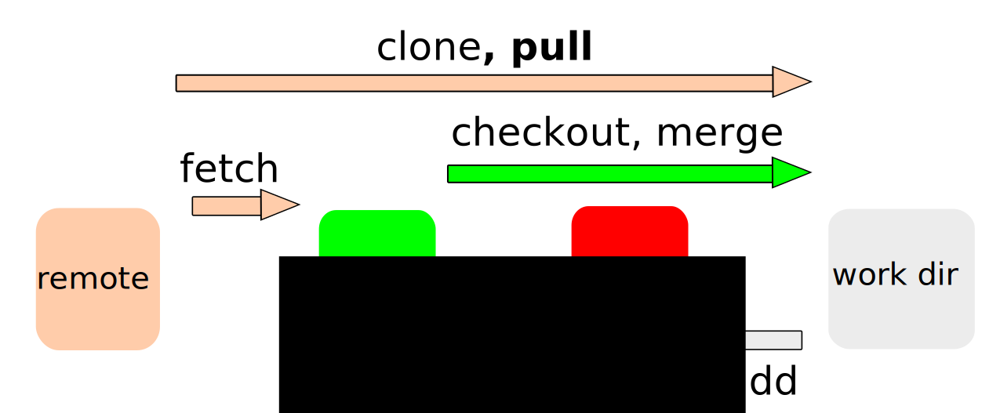
- Merging upstream changes into a local repository is a common task
pullmakes this two step process in a single step$ git pullis the same as:
$ git fetch <remote>
$ git merge origin/<current-branch>- Can lead to conflicts as any other
merge
Push, push!
git push [<remote>][<branch>]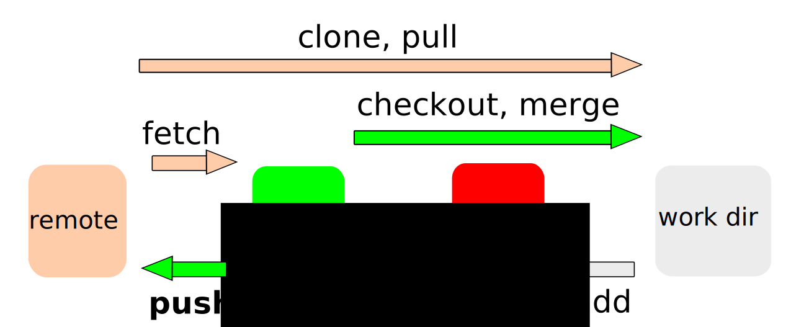
- Publish all commited local changes to a central repository
- Creates/updates a local branch in the destination repository
- Tags are not automatically sent (use
--allor--tagsflags) - If non-fast-forward merge, push is not permitted (will change commits)
- Use
--forceif you really need this CAUTION
dangerrr!!!
git rebase (harder collaboration)
- User can change the history
- Useful for non-pushed commits only, else collaboration is harder
git reset [<name>](lose commits)
- Move
branch,HEADto specific commit indexandworking directorydo not change
git rm (lose code)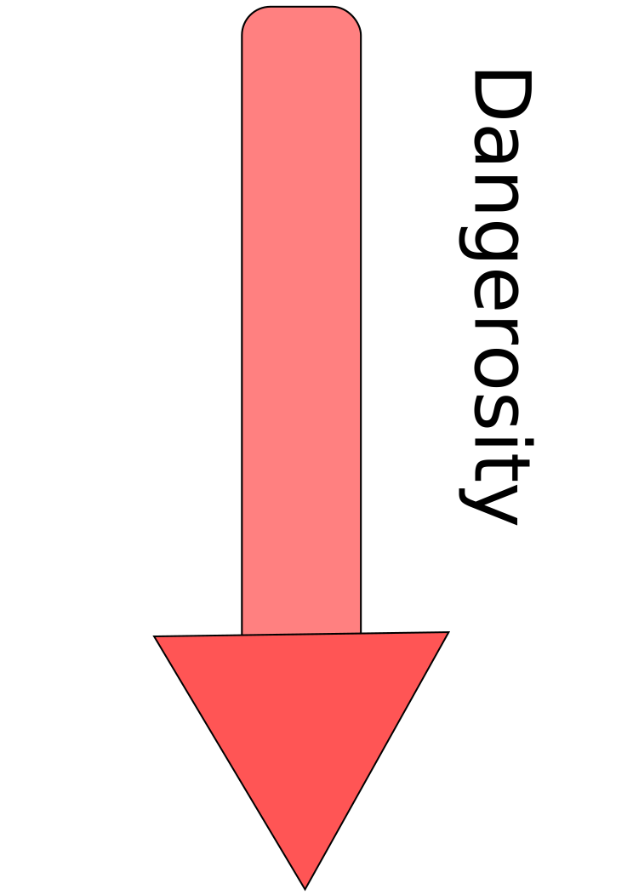
- Remove file from
indexor fromindexandworking directory
git reset --hard [<name>]
(lose code + commits)
- Move
branch,HEAD,indexandworking directoryto specific commit
et al.
git tag
- Add a label in a commit object
git tag -a v4.4.4 -m 'my lucky version'
git stash
- If active branch is dirty and have to quickly checkout another branch
git stashadds the modified files and staged changes in a stackgit stash popre-inserts the files to the current branch
git bisect
- Use binary search to find which commit introduced a bug
git revert
- Revert a commit and commit the change
git mv, show, cherry pick, blame, etc.
There is no file lock command, since there is no server!
- No locking, means better parallelism & collaboration!
tips
for you, not for the waiter!
- git tracks content not files
- be careful with
git mv(commit both the old and new file) - commit often (easier code review, bug tracking and merging)
- pull master often (reduces conflicts)
- keep binary files in another repository (overhead per each
clone) - make sure commits pass tests and compile cleanly (helps collaboration)
- delete branches that you are sure are unneeded! (branch overhead)
- check which files you are committing (stop poisoning history)
- do not commit passwords (they will always be in the history)
- when changes are pushed, you can't take them back (almost)
- be careful about code formatting
→ changes are hidden in noise
→ produce conflicts
→ make explicit commits for formatting
workflows
Centralized (SVN like) 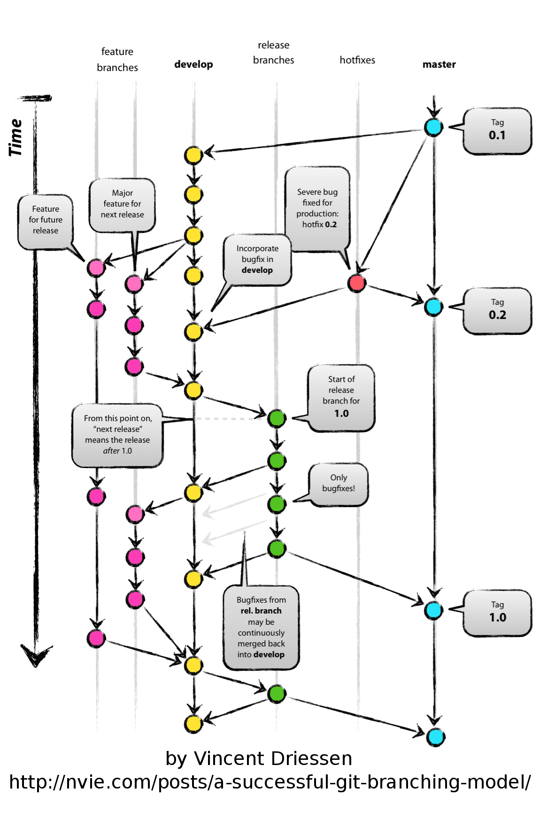
- Someone initializes a central branch (master)
- Everybody clones the central repository
- Each one works to the code (edit, stage, commit)
- Upload work in master
git push origin master - If trees have diverged, you have first to
git pull
Decentralized 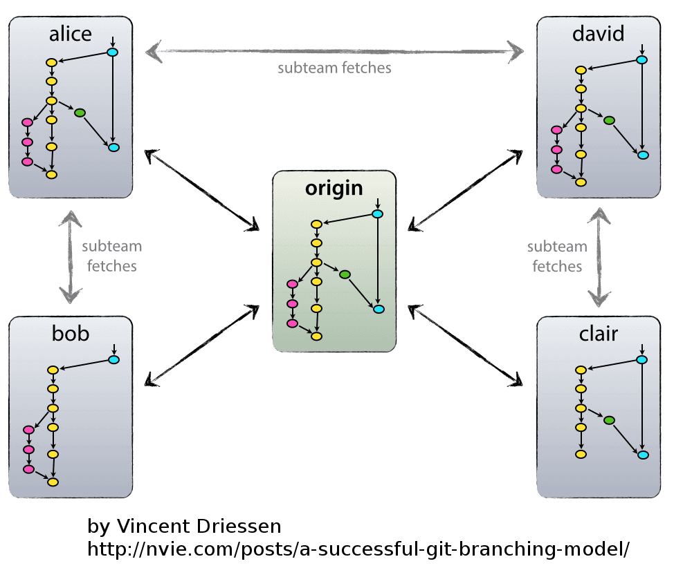
Sketches by Vincent Driessen
http://nvie.com/posts/a-successful-git-branching-model/
online repos
| github | Bitbucket | gitlab | |
|---|---|---|---|
| DVCS | git & hg | hg & git | git |
| Free public repos | Yes (unlimited members) |
Yes (team < 6) |
Yes |
| Free private repos | No | Yes (team < 6 - unlimited for academy) |
Yes |
| Size of repos | Unlimited | 2Gb | 10Gb |
| Deployed | Cloud | Cloud | Cloud or own server (paid) |
| Issues | Yes | Yes | Yes |
| Social Aspect | Strong (OS) | Not strong | New kid on the block |
| Pull requests | Yes | Yes | Yes |
| Wikis | Yes | Yes | Yes |
| Project Deployment | No | No | Yes |
| Code Statistics | Best | Moderate | ? |
Do you dance?
Yes, with code!
hippalus, a Preference-enriched Faceted Search (PFS) system
Video shows the history of the code
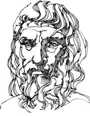
Epicurus advice:
Epicurus advice:
Quit procrastinating & learn git
Γεγόναμεν ἅπαξ, δὶς δὲ οὐκ ἔστι γενέσθαι
δεῖ δὲ τὸν αἰῶνα μηκέτι εἶναι
σὺ δὲ οὐκ ὢν τῆς αὔριον κύριος ἀναβάλλῃ τὸ χαῖρο
ὁ δὲ βίος μελλησμῷ παραπόλλυται καὶ εἷς ἕκαστος ἡμῶν ἀσχολούμενος ἀποθνῄσκει.
We have been born once and cannot be born a second time; for all eternity we shall no longer exist. But you, although you are not in control of tomorrow, are postponing your happiness. Life is wasted by delaying, and each one of us dies without enjoying leisure.